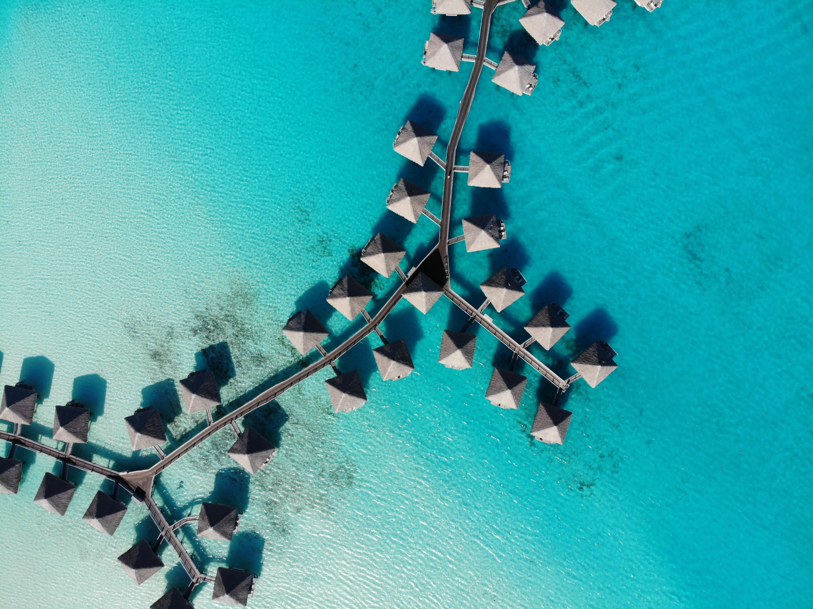
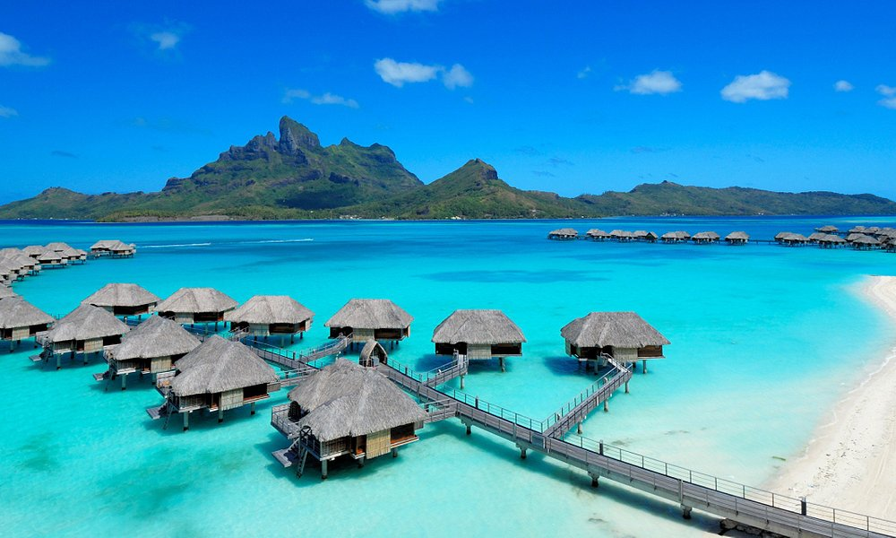

Un velours bleu s’élève de l’eau profonde où les teintes douces du lagon se mêlent avec l’air humant Bora Bora. Le toucher de la brise marine ressemble à une caresse et chaque battement du cœur se remplit de ses baisers. Un bref trajet de 50 minutes depuis l’île de Tahiti ou Moorea, relie à Bora Bora, une palette infinie de bleus et de verts dansant les plus belles poésies d’amour dès le premier regard. Les romantiques du monde entier célèbrent cette île où les pentes tropicales et les vallées luxuriantes du mont Otemanu fleurissent avec des hibiscus, tandis que les motu couverts de palmiers encerclent le lagon illuminé ressemblant à un collier délicat. Des plages de sable blanc parfaites s’allient à des eaux azurées où les poissons colorés animent les jardins de corail d’où surgissent des raies manta majestueuses et élégantes. Vous voilà au coeur d’un univers romantique où il fait bon de se détendre au creux des bungalows sur pilotis des hôtels de luxe ou des SPAs dont les villas en toit de chaume accompagnent un cadre et une atmosphère légendaire. Autrement dit, Bora Bora est l’une des plus belles îles au monde.
Découvrir les trois meilleurs plages à Bora bora
 